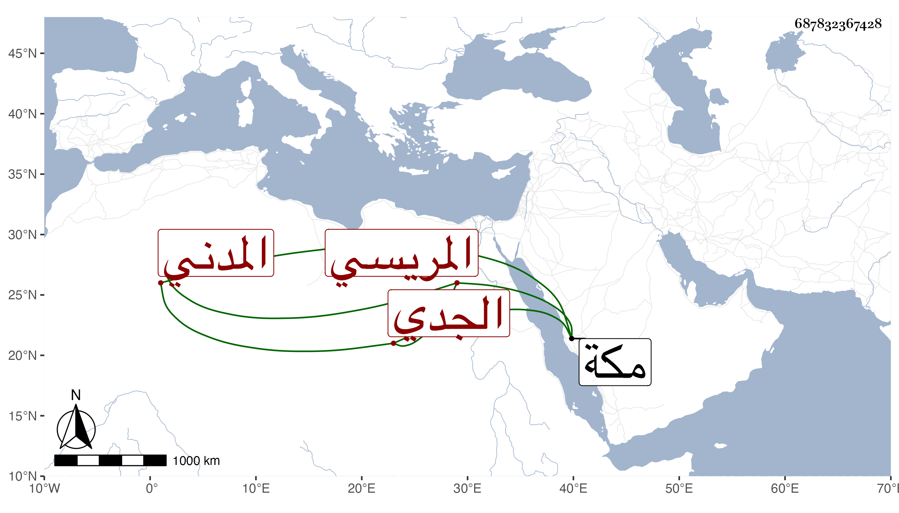

0902Sakhawi.DawLamic.ITO20230111-ara1.EIS1600.687832367428
Biography ID: 687832367428
562
محمد بن علي بن محمد الجمال بن النور أبي الحسن بن أبي الخير المريسي الأصل المدني المولد الجدي نسبة لجدة فهو مع أخيه ممن يباشر ما يتعلق بالشريف بها ، وممن ارتحل إلى مكة فقرأ على ثلاثيات البخاري وأربعي النووي وبعض الشفا وسمع على غير ذلك بل سمع مني المسلسل وأثنى على عقله وسياسته وأنه هو وأبوه ممن يقرأ القرآن بل حفظ هذا في المنهاج وغيره ، وكتبت له إجازة وأجزت لبنيه الثلاثة وفارقته في موسم سنة أربع وتسعين ثم رأيته بعد ذلك حين سلم علي في المجاورة بعدها
